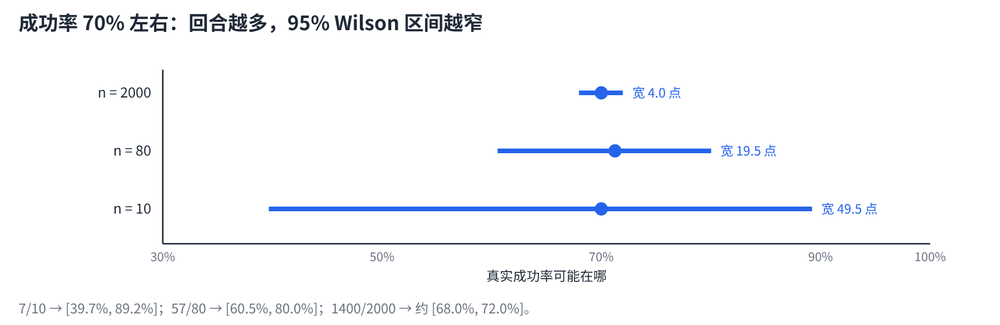
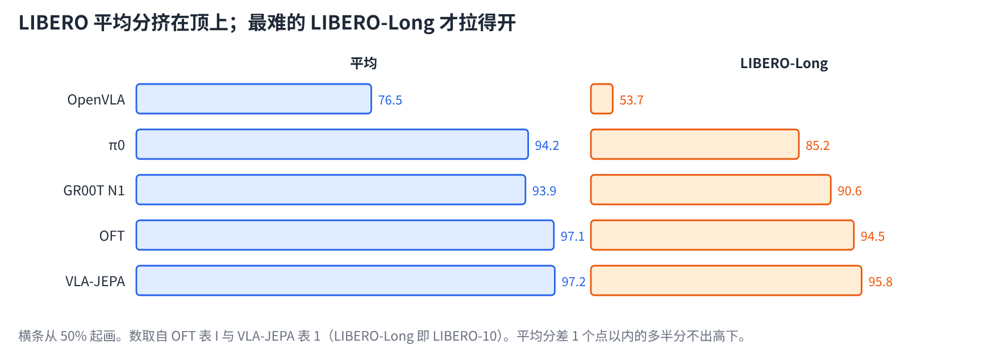
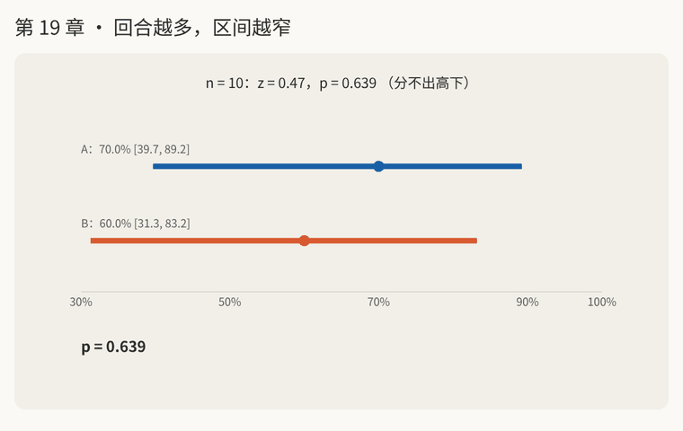

第 19 章 · 评测：97.1% 和 96.4%，到底谁更强
本地运行
git clone https://github.com/wikieden/vla-from-scratch
cd vla-from-scratch/code/notebooks
pip install jupyterlab torch numpy
jupyter lab ch19_evaluation.ipynb也可以下载后直接用 VS Code 打开 .ipynb 运行。需要 GPU 的章节在 Colab 里选「代码执行程序 → 更改运行时类型 → GPU」。
本章回答：论文里的 LIBERO、SimplerEnv、真机分数各是怎么测出来的？真机测 10 次成了 7 次，真实水平在哪？97.1% 对 96.4%、71.3% 对 58.1%，哪个差距是真的？一张对比表，读之前先查哪几件事？
讲解日期：2026-11-24 · 上一章：第 18 章 跑得快 · 下一章：第 20 章 潜空间世界模型
对应原文：materials/text/papers/openvla-oft-2502.19645.txt§V-A LIBERO 设置 L267–L278、表 I 的三种协议 L282–L316；openvla-2406.09246.txtL388–L392、L420–L424（真机回合数）、表 2 L604–L612；vla-jepa-2602.10098.txtL396–L401（LIBERO-Plus 七个扰动维度）；smolvla-2506.01844.txt图 5 L640–L672（固定时间指标）；FastWAM 复现结果materials/code/lerobot/repo/src/lerobot/policies/fastwam/README.mdL30–L41
本章缩写：SR = Success Rate（成功率）；CI = Confidence Interval（置信 / 区间）；SE = Standard Error（标准 / 误差）；LIBERO = Lifelong Robot Learning Benchmark（终身 / 机器人学习 / 基准）；SIMPLER / SimplerEnv = 仿真复刻真机评测的环境；OOD = Out-of-Distribution（分布外）。全表见 appendix-glossary.md
讲解
第 1 步：三种考场（2026-11-24）
类比：驾照考试。 科目一在电脑上做题（仿真基准），便宜、标准、能考几千次；科目三上真路（真机），贵、每次路况不一样、只能考几次。两种分数都有用，但不能直接比大小。
| 考场 | 怎么考 | 一次评测多少回合 | 例子 |
|---|---|---|---|
| LIBERO（仿真） | 4 个套件（Spatial / Object / Goal / Long），每个 10 个任务、500 条示范（OFT L271–L274） | 每个任务 50 回合，一个套件 500 回合，四个 2000 回合（FastWAM 复现表 L33–L39） | OFT 97.1%、FastWAM 96.4% |
| SimplerEnv（仿真复刻真机） | 照着 Google 机器人、WidowX 的真实场景搭仿真，拉近外观差距 | 每个任务几十回合 | CogACT、VLA-JEPA（L392–L401） |
| 真机 | 按任务录几遍、在真机上跑 | 一个方法几十到一百多回合：OpenVLA BridgeData 17 任务 × 10 = 170，Google 机器人 12 × 5 = 60（L420–L424） | OpenVLA、SmolVLA |
一句话：仿真能考很多次，分数稳；真机才是真本事，但次数少、误差大。
第 2 步：一个分数有多准，Wilson 区间（2026-11-24）
类比：投篮 10 投 7 中。 你不能说他的真实命中率就是 70%，只能说"大概在 40% 到 89% 之间"。投 2000 次，区间才会缩到 1 个点左右。
《数学与实验统计》第 1 章讲过：成功率是估计值，用 Wilson 区间表示它有多准（\(\hat p\) = 成功次数 / 回合数，\(z = 1.96\) 对应 95%）：
例：
| 结果 | 回合数 n | 95% Wilson 区间 | 区间宽 |
|---|---|---|---|
| 真机 7 / 10 | 10 | [39.7%, 89.2%] | 50 个点 |
| 真机 57 / 80（≈ 71.3%） | 80 | [60.5%, 80.0%] | 20 个点 |
| LIBERO 1942 / 2000（97.1%） | 2000 | [96.3%, 97.7%] | 1.5 个点 |
真机 10 次的分数几乎什么也说明不了；这也是为什么论文里的真机成功率常写成"71.3 ± 4.8%"（± 后面是标准误，OpenVLA 表 2）。

图 19-1 · 70% 左右的成功率，n = 10、80、2000 时的 95% 区间。
一句话：先看测了几回合，再看分数；10 回合的区间有 50 个点宽。
第 3 步：两个分数比一比（2026-11-24）
类比：两个射手各投 2000 次，一个 97.1%、一个 96.4%。 差 0.7 个点，是真的准一点，还是这次手气好？
《数学与实验统计》第 2 章的两比例 z 检验：先把两组合起来算一个共同成功率 \(\bar p\)，再看差值是标准误的几倍：
例 1：OFT 97.1%（1942 / 2000）对 FastWAM 96.4%（1928 / 2000）：\(\bar p = 0.9675\)，\(z \approx 1.25\)，双侧 \(p \approx 0.21\)。分不出高下。
例 2：OpenVLA bf16 71.3% 对 int8 58.1%（第 18 章，各 80 回合，折成 57 / 80 对 46 / 80）：\(z \approx 1.82\)，\(p \approx 0.07\)。差了 13 个点，按 0.05 的标准仍不算显著；论文用"慢导致掉点"解释它，这个解释合理，但这组数据本身证据不强。
比之前还要确认协议一样。OFT 表 I 把基线分成三组（L282–L316）：
| 协议 | 训练数据 | 输入 |
|---|---|---|
| ① | 去掉失败示范的修改版 | 第三人称图 + 指令 |
| ② | 原始未过滤数据 | 第三人称 + 腕部图 + 本体状态 + 指令 |
| ③ | 去掉失败示范的修改版 | 第三人称 + 腕部图 + 本体状态 + 指令 |
同一个 OFT，协议 ① 是 95.3%、② 是 94.5%、③ 是 97.1%。跨协议比两个模型，差的可能是协议而不是模型。
一句话：差距要和标准误比；比之前先看两边是不是同一张考卷。
第 4 步：分数顶到头之后，看什么（2026-11-24）
类比：满分 100 的考试，大家都考 97–99 分。 再比总分没意义，要换更难的卷子，或者比答题速度。
LIBERO 平均已经普遍 95% 以上（OFT 97.1%、SimpleVLA-RL 99.1%、FastWAM 96.4%）。读表时多看这几项：
| 看什么 | 为什么 | 例子 |
|---|---|---|
| 最难的子项 | 平均会被简单的子项拉高 | LIBERO-Long：OpenVLA 53.7% → OFT 94.5% |
| 扰动下的分数 | 换相机角度、光照、背景、指令说法后还剩多少 | LIBERO-Plus 七个扰动维度（VLA-JEPA L399–L401） |
| 单位时间做了多少 | 成功率一样，快的更有用 | SmolVLA 异步 60 秒内 19 个、同步 9 个（第 18 章） |
| 真机、分布外 | 仿真分数不等于真机 | OpenVLA 把真机任务分成分布内和 OOD 分别报 |
| 回合数、区间、种子 | 不写这些，分数没法比 | 第 2、3 步 |
场景代码：LeRobot 在 LIBERO 上复现 FastWAM 的真实命令（README L41，每个任务 50 回合）：
lerobot-eval --policy.path=ZibinDong/fastwam_libero_uncond_2cam224 \
--policy.device=cuda --policy.dtype=float32 --policy.n_action_steps=10 \
--env.type=libero --env.task=libero_spatial \
--env.observation_height=256 --env.observation_width=256 \
--eval.batch_size=1 --eval.n_episodes=50 --seed=0 --env.episode_length=300
--eval.n_episodes 决定第 2 步的 n，--seed 决定初始场景；换一个种子再跑一遍，就能看到分数自己会晃多少。

图 19-2 · 同几个模型的平均分挤在一起，LIBERO-Long 才看得出差距。
一句话：分数挤在顶上时，看最难的、加扰动的、按时间算的。
动画演示：回合数和区间宽度

可交互版：animations/19-evaluation.html（滑块：模型 A、B 的成功率，回合数 n 10–2000）。
怎么看：
- 两根横条是 A、B 的 95% Wilson 区间，点是估计值（第 2 步）；
- 右边是两比例 z 检验的 z 和 p，p < 0.05 时标绿（第 3 步）；
- 播放：70% vs 60%、n = 10 → n = 80 → n = 500；再 97.1% vs 96.4%、n = 500 → n = 2000。
练习与作答记录
题 1（第 2 步）：真机测 10 回合成了 8 次。95% Wilson 区间是多少？能不能说它比另一个"10 回合成了 6 次"的模型强？
作答记录：（待作答）
题 2（第 2 步）：想把 95% 区间的半宽缩到 ±2 个点，成功率在 95% 附近。粗估至少要多少回合（用 \(n \approx z^2 \hat p(1-\hat p)/h^2\)）？LIBERO 一个套件 500 回合够不够？
作答记录：（待作答）
题 3（第 3、4 步）：一篇论文的表里，A 模型用了腕部相机、B 模型没用，A 比 B 高 2 个点、各 500 回合。你会怎么评价"A 的方法更好"这个结论？
作答记录：（待作答）
口诀
电脑题考千次分数稳，上真路考几次误差大；
十投七中，真实在四成到九成之间；
差距跟标准误比，比之前看是不是同一张卷子；
都考满分就换难卷、比速度。
本章复习卡片
V45（LIBERO 4 套件 × 10 任务 × 50 回合；Wilson 区间：7/10 → [39.7%, 89.2%]，1942/2000 → [96.3%, 97.7%]）、V46（两比例 z 检验：97.1 vs 96.4 z ≈ 1.25 不显著；分数饱和看最难子项、扰动、单位时间）。练习做完后，按答错、卡住的地方再补。
附录 · 延伸阅读
留给以后深入学习用，不影响本章主线。★ 是建议先读的。
推荐阅读
| 读什么 | 读哪里 | 读它为了什么 |
|---|---|---|
| ★ 《数学与实验统计》第 1 章 | Wilson 区间 | 第 2 步的来源 |
| ★ 《数学与实验统计》第 2 章 | 两比例检验、Fisher 精确检验 | 第 3 步的来源 |
| OpenVLA-OFT 表 I | openvla-oft-2502.19645.txt L279–L316 |
三种协议怎么分组 |
| OpenVLA 真机评测 | openvla-2406.09246.txt L388–L424、附录 |
真机任务怎么设计、分布内 / 外 |
| Kress-Gazit 等《Robot Learning as an Empirical Science》 | math-and-eval-stats/materials/text/papers/robot-eval-best-practices-2409.09491.txt §6.4 |
机器人评测怎么报才可信 |
| 第 14 章 主流 VLA 全景 | 各模型分数 | 用本章的方法重读那张表 |
数学原理
- 伯努利标准误：\(\mathrm{SE} = \sqrt{\hat p(1-\hat p)/n}\)，回合数翻 4 倍，误差减半。
- Wilson 区间：反解"真值 p 下，看到 \(\hat p\) 不算意外"的所有 p；成功率接近 0 或 1 时比 \(\hat p \pm 1.96\,\mathrm{SE}\) 可靠。
- 两比例 z 检验：在"两者一样"的假设下，差值的标准误用合并成功率 \(\bar p\) 算。
- 样本量：半宽 h 要求 \(n \approx z^2 \hat p(1-\hat p)/h^2\)。
公式清单
| 公式 | 意思 |
|---|---|
| \(\mathrm{SE} = \sqrt{\hat p(1-\hat p)/n}\) | 一个成功率的标准误 |
| Wilson：\(\dfrac{\hat p + \frac{z^2}{2n} \pm z\sqrt{\frac{\hat p(1-\hat p)}{n} + \frac{z^2}{4n^2}}}{1 + z^2/n}\) | 95% 区间（z = 1.96） |
| \(z = (\hat p_1 - \hat p_2)/\sqrt{\bar p(1-\bar p)(1/n_1 + 1/n_2)}\) | 两比例 z 检验 |
| \(n \approx z^2 \hat p(1-\hat p)/h^2\) | 要多少回合 |
代码对照：把本章的数字用代码算一遍
纯 Python。代码在仓库本地
vla-deep-dive/solutions/chapter-code/ch19_evaluation.py，配套测试tests/test_ch19.py：
bash cd vla-deep-dive/solutions/chapter-code uv run python ch19_evaluation.py uv run pytest tests/test_ch19.py
讲义 ↔ 代码：
| 讲义 | 写法 | 跑出来 |
|---|---|---|
| 第 1 步 | LIBERO |
4 × 10 × 50 = 2000 回合 |
| 第 2 步 | wilson_ci(k, n) |
7/10 → [0.397, 0.892]；57/80 → [0.605, 0.800]；1942/2000 → [0.963, 0.977] |
| 第 3 步 | two_prop_z(k1, n1, k2, n2) |
z = 1.25、p = 0.21；z = 1.82、p = 0.07 |
| 第 3 步 | OFT_PROTOCOLS |
95.3 / 94.5 / 97.1 |
代码里才看得到的 3 件事：
- 论文只给百分比时，代码按 \(k = \mathrm{round}(\hat p \cdot n)\) 反推成功次数：97.1% × 2000 = 1942、71.3% × 80 = 57.04 → 57；所以算出的区间和论文写法会差在第三位小数。
two_prop_z的 p 值用math.erfc(|z|/√2)，就是标准正态的双侧尾概率，不用装 scipy。- OFT 论文没写每个套件评测了多少回合；代码按 LIBERO 常用的每任务 50 回合（和 FastWAM 复现表一致）估算，这是假设。
自己改一改（不影响练习答案）：
- 把
wilson_ci的 z 换成 2.576（99%），看区间宽了多少。 - 用
two_prop_z找出"97.1% vs 96.4%"要各测多少回合才显著（p < 0.05）。 - 给
wilson_ci喂 0 / 10 和 10 / 10，比较和 \(\hat p \pm 1.96\,\mathrm{SE}\) 的区别。